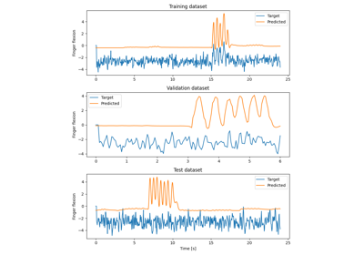

braindecode.models.get_output_shape#
- braindecode.models.get_output_shape(model, in_chans, input_window_samples)[source]#
Returns shape of neural network output for batch size equal 1.
- Returns:
output_shape – shape of the network output for batch_size==1 (1, …)
- Return type:
Examples using braindecode.models.get_output_shape#

Fingers flexion cropped decoding on BCIC IV 4 ECoG Dataset
Fingers flexion cropped decoding on BCIC IV 4 ECoG Dataset